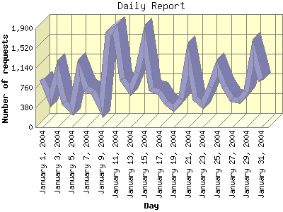

Report generated by Analog 5.91beta1 and Report Magic 2.21
|
Web Server Statistics for "Harish Narayanan (hnarayan) - January 2004" Report generated by Analog 5.91beta1 and Report Magic 2.21 |
The Daily Report identifies the activity for each day within the reporting period. Remember that one page hit can result in several server requests as the images for each page are loaded.

| Day | Number of requests | Number of bytes transferred | Percentage of the bytes | Percentage of the requests | |
|---|---|---|---|---|---|
| 1. | January 1, 2004 | 923 | 5.816 MB | 2.11% | 3.53% |
| 2. | January 2, 2004 | 555 | 5.749 MB | 2.09% | 2.12% |
| 3. | January 3, 2004 | 1,064 | 8.717 MB | 3.17% | 4.07% |
| 4. | January 4, 2004 | 479 | 8.020 MB | 2.92% | 1.83% |
| 5. | January 5, 2004 | 344 | 9.949 MB | 3.62% | 1.31% |
| 6. | January 6, 2004 | 1,093 | 10.546 MB | 3.83% | 4.18% |
| 7. | January 7, 2004 | 729 | 9.783 MB | 3.56% | 2.79% |
| 8. | January 8, 2004 | 682 | 8.590 MB | 3.12% | 2.61% |
| 9. | January 9, 2004 | 385 | 3.127 MB | 1.14% | 1.47% |
| 10. | January 10, 2004 | 1,797 | 8.706 MB | 3.16% | 6.87% |
| 11. | January 11, 2004 | 1,881 | 10.200 MB | 3.71% | 7.19% |
| 12. | January 12, 2004 | 925 | 14.750 MB | 5.36% | 3.54% |
| 13. | January 13, 2004 | 713 | 6.363 MB | 2.31% | 2.73% |
| 14. | January 14, 2004 | 1,049 | 7.063 MB | 2.57% | 4.01% |
| 15. | January 15, 2004 | 1,650 | 22.367 MB | 8.13% | 6.31% |
| 16. | January 16, 2004 | 737 | 14.024 MB | 5.10% | 2.82% |
| 17. | January 17, 2004 | 678 | 11.615 MB | 4.22% | 2.59% |
| 18. | January 18, 2004 | 477 | 3.112 MB | 1.13% | 1.82% |
| 19. | January 19, 2004 | 369 | 5.543 MB | 2.02% | 1.41% |
| 20. | January 20, 2004 | 543 | 6.241 MB | 2.27% | 2.08% |
| 21. | January 21, 2004 | 1,311 | 16.818 MB | 6.11% | 5.01% |
| 22. | January 22, 2004 | 559 | 5.705 MB | 2.07% | 2.14% |
| 23. | January 23, 2004 | 439 | 8.212 MB | 2.98% | 1.68% |
| 24. | January 24, 2004 | 774 | 9.328 MB | 3.39% | 2.96% |
| 25. | January 25, 2004 | 1,135 | 7.623 MB | 2.77% | 4.34% |
| 26. | January 26, 2004 | 791 | 11.672 MB | 4.24% | 3.02% |
| 27. | January 27, 2004 | 546 | 3.981 MB | 1.45% | 2.09% |
| 28. | January 28, 2004 | 515 | 3.603 MB | 1.31% | 1.97% |
| 29. | January 29, 2004 | 680 | 9.755 MB | 3.55% | 2.60% |
| 30. | January 30, 2004 | 1,441 | 12.832 MB | 4.66% | 5.51% |
| 31. | January 31, 2004 | 892 | 5.313 MB | 1.93% | 3.41% |
Most active day January 11, 2004 : 1,150 pages sent. 1,881 requests handled. 10,695,534.00 served.
Daily average: 843 requests handled. 8.875 MB served.
This report was generated on February 10, 2004 18:12.
Report time frame January 1, 2004 00:06 to January 31, 2004 23:54.
| Web statistics report produced by: | |
 Analog 5.91beta1 Analog 5.91beta1 |  Report Magic 2.21 Report Magic 2.21 |